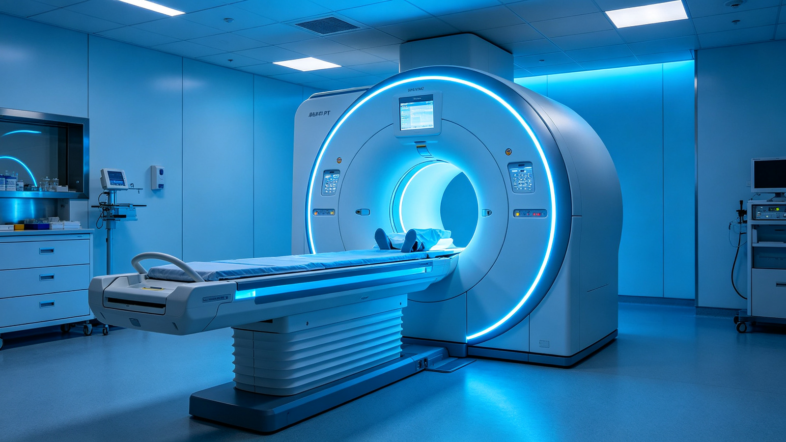
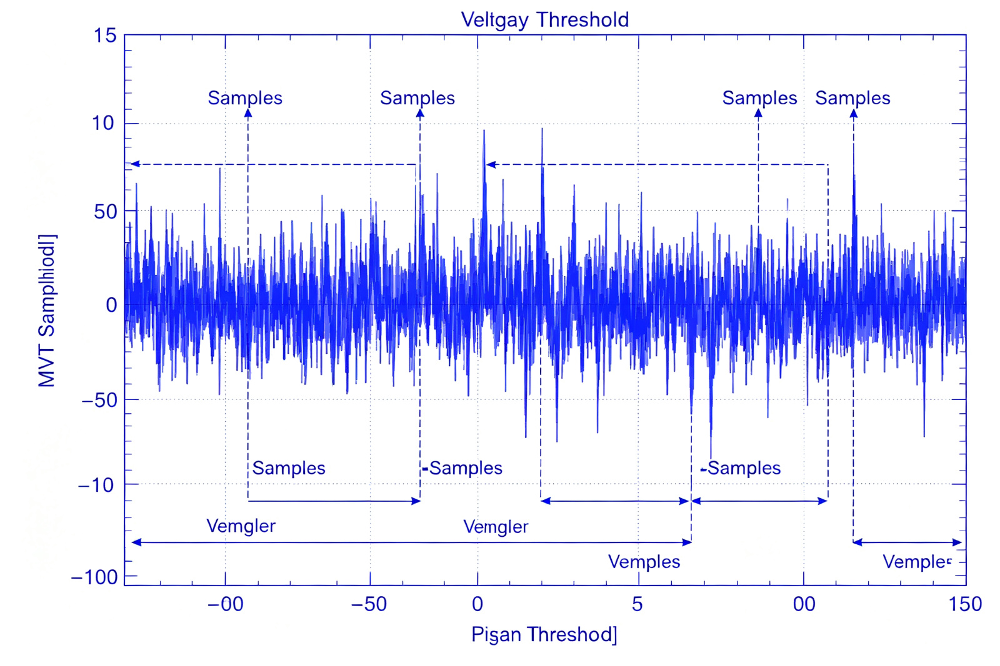
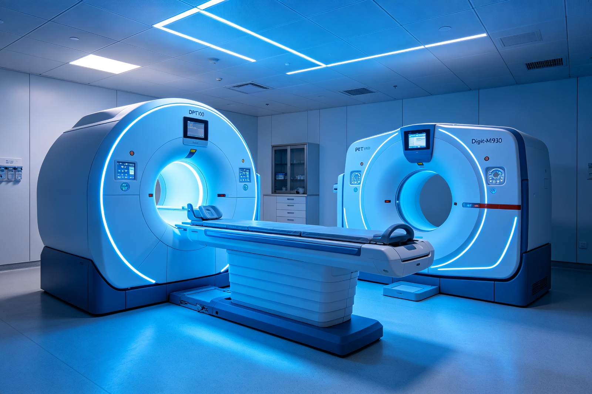
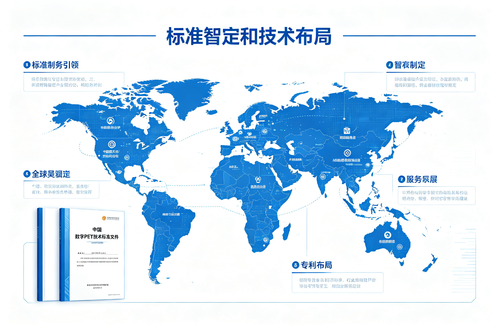

【成果推介|国家重点研发计划】全数字PET技术
【所属领域】生命健康
【技术成熟度】可量产
【市场前景】当前已局部应用，潜在市场规模在100亿以上
一、痛点问题
正电子发射断层成像（PET Positron Emission Tomography）是当前最尖端的医学分子影像设备之一，可无创、定量、动态地评估活体功能活动，在肿瘤、神经、心血管相关重大疾病的研究和诊疗方面具有独特优势。
然而，受超高速闪烁脉冲信号采样问题的限制，传统PET的技术原理40年来并无突破，长期存在"测不准、使用难、应用窄"三大短板，使得PET的巨大潜力受性能所限始终未能充分发挥。
二、成果介绍
针对以上问题，华中科技大学谢庆国教授带领团队于2004年在国际上首次提出"全数字PET"的概念，创新性地以"多电压阈值采样"（MVT）实现了PET超高速闪烁脉冲的精确数字化，通过二十余年积累，建立了系统、完整的数字PET技术体系，开创了全数字PET这一重要国际新方向。

数字PET技术以"全数字"和"精确采样"为两个本质特点：传统PET必须加入模拟预处理电路改变信号以间接获取脉冲信息，事倍功半；而全数字PET在取消了模拟电路，也即实现了全数字信号处理的同时实现了信号的源头精确数字化，达到高精度信号还原，事半而功倍。这两大特性又将带来"性能优异、使用便利、制造快捷"等革命性的优势。
团队先后完成了全球首台动物全数字PET、首台临床全数字PET、首个标准CMOS硅光电倍增器、首台脑部专用全数字PET，拥有全套自主知识产权。
以全数字PET科学仪器和医疗器械为主线，团队聚焦于关键材料、核心元器件、数字PET探测器、成像方法以及在肿瘤诊疗和脑科学脑疾病中应用等五个方面的科学发现与技术发明，研究方向覆盖从关键材料、核心器件、到系统集成、应用研究的整个创新链。形成了覆盖8个国家和地区的完整知识产权布局，在全数字PET领域专利数量全球第一。
"全数字PET标准和规范项目"以多电压阈值采样法为标志性数字化技术，即将在2023年正式执行，这意味着数字PET技术已经形成了对该方向的引领。该项目填补了全数字PET相关行业标准的空白，明确了全数字PET技术发展与市场导向，将进一步提升中国在高端医疗器械技术创新领域话语权。

第一代临床全数字PET/CT（型号DPET100）在鄂州市中心医院稳定运行两年多。
第二代临床全数字PET/CT（型号DigitMI930）获准进入市场，单床位成像速度全球第一。
三、技术优势与指标
技术优势：本项目成果为"行业标准"，不存在竞争。
| 标准名称 | 国家 | 是否数字化标准 |
|---|---|---|
| 正电子发射断层成像装置数字化技术要求（本项目成果） | 中国 | 是 |
| NEMA NU 2-2018 正电子发射断层成像设备(PET)的性能测量 | 美国 | 否 |
| IEC 61675-1:2022 放射性核素成像设备 特性和试验条件 | 欧洲 | 否 |
| GB/T 18988.1-2013 放射性核素成像设备 性能和试验规则 | 中国 | 否 |

四、资质荣誉
团队相关工作获湖北省技术发明奖一等奖（2013）、日内瓦国际发明展金奖3项（2013、2017）、黄家驷生物医学工程奖技术发明一等奖（2019），入选"两院院士评选2019年中国十大科技进展新闻"、"2019年度中国医学重大进展"、国家重点研发计划（2019）、世界知识产权组织（WIPO）全球奖（2022），牵头制定了中国和欧盟数字PET技术标准与规范。
五、应用场景
第一代临床全数字PET（型号DPET100）于2018年获国家创新医疗器械特别审批、2019年获市场准入，于2020年在鄂州市中心医院实现销售装机，稳定运行至今，服务上千名患者。
第二代设备（型号DigitMI930）于2022年获得市场准入，以每床位20秒的扫描时间实现成像，成像速度为当前全球第一，该设备与多家医院达成了销售意向。通过不断的迭代优化，让全数字PET技术服务大众，并且持续保持全数字PET技术的先进性。
六、市场前景
市场当前已局部应用，潜在市场规模在100亿以上。
1. 医学影像方面
团队相继成功研发全球首台动物全数字PET和临床全数字PET，并实现相关设备的迭代更新，将PET从模数混合时代带入高清、精准定量的数字时代，能更快更灵敏地发现肿瘤等疾病病灶。团队前期工作以完成"人有我优"的数字PET 1.0研发，证明了创新技术路线的可行性和优势。未来工作拟开展以"人无我有"的数字PET 2.0创新应用示范和创新系统研发，其中以脑PET、头盔式PET、质子PET等为标志，实现"能传统PET所不能"的突破。
2. 辐射探测方面
数字PET还被广泛应用于核辐射探测、安检、石油勘探的测井仪、植物研究等多个领域。其中，在石油测井方面，团队与国内石油勘测巨头合作，研发了以MVT方法为核心的测井设备，目前已在山西、南海等地进行了测井作业；在安检CT领域，合作开发的安检CT能够实现物质识别，对剧毒物品、麻醉剂等违禁品的检测具有重要意义，目前已投入试点使用。
3. 科学前沿应用探索方面
数字PET还可以用于宇宙元事例分布式观测；基于MVT方法构建的云平台更开放、更灵活，将能适应大科学装置等复杂的应用场景；团队还专注于下一代超精细三维编码、高密度读出PET探测器的研发，为算法开发者提供更好的基础设施。